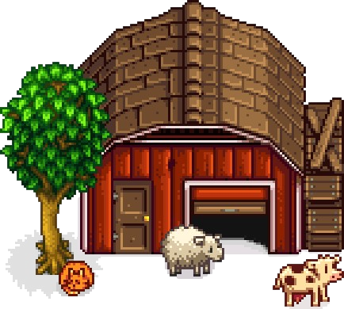
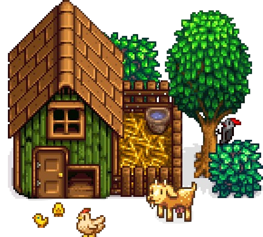

Venha explorar o mundo de Stardew Valley!
Cadastre-se para ter acesso a conteúdos exclusivos

Stardew Valley
Stardew Valley é um RPG sem fim da vida no campo! Você herdou a antiga fazenda de seu avô no Vale do
Orvalho. Equipado com ferramentas de segunda mão e algumas moedas, você irá começar sua nova vida. Será que
você consegue aprender a viver da terra e transformar esses campos absurdamente vegetados em uma casa
próspera? Não vai ser fácil. Desde que Corporação Joja veio à cidade, os antigos modos de vida quase
desapareceram. O Centro Comunitário, uma vez o lugar mais visitado da cidade, agora está em ruínas. Mas o
vale parece cheio de oportunidades. Com um pouco de dedicação, você pode ser a pessoa que restaurará a
grandeza do Vale do Orvalho!

Stardew Valley
Plante, crie animais, pesque, explore cavernas e construa relacionamentos com os moradores da vila. O jogo
permite personalização total da fazenda, participação em eventos, casamento, produção de itens e muito mais.
Também conta com modo multiplayer e uma trilha relaxante, oferecendo uma experiência rica e envolvente para
todos os estilos de jogador.
Stardew Valley
Stardew Valley é um RPG sem fim da vida no campo! Você herdou a antiga fazenda de seu avô no Vale do
Orvalho. Equipado com ferramentas de segunda mão e algumas moedas, você irá começar sua nova vida. Será que
você consegue aprender a viver da terra e transformar esses campos absurdamente vegetados em uma casa
próspera? Não vai ser fácil. Desde que Corporação Joja veio à cidade, os antigos modos de vida quase
desapareceram. O Centro Comunitário, uma vez o lugar mais visitado da cidade, agora está em ruínas. Mas o
vale parece cheio de oportunidades. Com um pouco de dedicação, você pode ser a pessoa que restaurará a
grandeza do Vale do Orvalho!